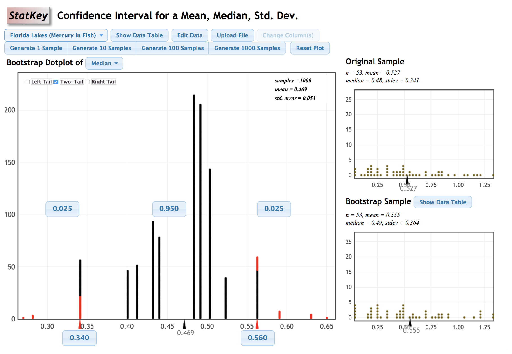

Clicker Q
to go with Introduction to Modern Statistics by Çentinkaya-Rundel & Hardin. Math 58B - Introduction to Biostatistics.
- If 16 infants with no genuine preference choose 16 toys, what is the most likely number of “helping” toys that will be chosen?
- 4
- 7
- 8
- 9
- 10
- How likely is it that exactly 8 helpers will be chosen (if there is no preference)?
- 0-15%
- 16-30%
- 31-49%
- 50%
- 51-100%
- What if we flipped a coin 160 times? What percent of the time will the simulation flip exactly 80 heads?
- 0-15%
- 16-30%
- 31-49%
- 50%
- 51-100%
- Is our actual result of 14 (under the coin model)…
- very surprising?
- somewhat surprising?
- not very surprising?
- Based on the first handwriting study, can we conclude that cursive causes higher scores (on average)?
- Yes
- No
- It depends
- Based on the second handwriting study, can we conclude that cursive causes higher scores (on average)?
- Yes
- No
- It depends
- A possible confounding variable for the handwriting study is:
- grade of the student (age)
- region of country where the SAT was taken
- academic ability of the student
- gender identity of the student
- number of siblings of the student.
- The main reason we randomly assign the explanatory variable is:
- To get the smallest p-value possible
- To balance the expected causal mechanism across the two groups
- To balance every possible variable except the causal mechanism across the two groups
- So that our sample is representative of the population
- So that the sampling process is unbiased
- The main reason we take random samples from the population is:
- To get the smallest p-value possible
- To balance the expected causal mechanism across the two groups
- To balance every possible variable except the expected causal mechanism across the two groups
- So that our sample is representative of the population
- So that the sampling process is unbiased
- Are there effects of second-hand smoke on the health of children?
- definitely obs study
- definitely experiment
- unhappily obs study
- unhappily experiment
- Do people tend to spend more money in stores located next to food outlets with pleasing smells?
- definitely obs study
- definitely experiment
- unhappily obs study
- unhappily experiment
- Does cell phone use increase the rate of automobile accidents?
- definitely obs study
- definitely experiment
- unhappily obs study
- unhappily experiment
- Do people consume different amounts of ice cream depending on the size of bowl used?
- definitely obs study
- definitely experiment
- unhappily obs study
- unhappily experiment
- Which is more effective: diet A or diet B?
- definitely obs study
- definitely experiment
- unhappily obs study
- unhappily experiment
- Suppose that we record the midterm exam score and the final exam score for every student in a class. What would the value of the correlation coefficient be if every student in the class scored ten points higher on the final than on the midterm:
- r = -1
- -1 < r < 0
- r = 0
- 0 < r < 1
- r = 1
- Suppose that we record the midterm exam score and the final exam score for every student in a class. What would the value of the correlation coefficient be if every student in the class scored five points lower on the final than on the midterm:
- r = -1
- -1 < r < 0
- r = 0
- 0 < r < 1
- r = 1
- Suppose that we record the midterm exam score and the final exam score for every student in a class. What would the value of the correlation coefficient be if every student in the class scored twice as many points on the final than on the midterm:
- r = -1
- -1 < r < 0
- r = 0
- 0 < r < 1
- r = 1
- Suppose you guessed every value correctly (guess the correlation applet), what would be the value of the correlation coefficient between your guesses and the actual correlations?
- r = -1
- -1 < r < 0
- r = 0
- 0 < r < 1
- r = 1
- Suppose each of your guesses was too high by 0.2 from the actual value of the correlation coefficient, what would be the value of the correlation coefficient between your guesses and the actual correlations?
- r = -1
- -1 < r < 0
- r = 0
- 0 < r < 1
- r = 1
- A correlation coefficient equal to 1 indicates that you are a good guesser.
- TRUE
- FALSE
- Perfect Correlation… if not for a single outlier
n = 101 observations: 1 observation in top left, 25 observations in each in of the points near the bottom right.
The value of the correlation, r, is:
- -1 < r < -0.9
- -0.9 < r < -0.5
- -0.5 < r < 0.5
- 0.5 < r < 0.9
- 0.9 < r < 1
- The sum of residuals from the sample mean (no X): \[\sum_{i=1}^n(Y_i - \overline{Y})\]
- is positive
- is negative
- is zero
- is different for every dataset
- A good measure of how well the prediction (of the sample mean) fits the data is:
- \(\sum_{i=1}^n(Y_i - \overline{Y})\)
- \(\sum_{i=1}^n(Y_i - \overline{Y})^2\)
- \(\sum_{i=1}^n|Y_i - \overline{Y}|\)
- \(\mbox{median}(Y_i - \overline{Y})\)
- \(\mbox{median}|Y_i - \overline{Y}|\)
- A good measure of how well the prediction (of the regression line) fits the data is:
- \(\sum_{i=1}^n(Y_i - \hat{Y}_i)\)
- \(\sum_{i=1}^n(Y_i - \hat{Y}_i)^2\)
- \(\sum_{i=1}^n|Y_i - \hat{Y}_i|\)
- \(\mbox{median}(Y_i -\hat{Y}_i)\)
- \(\mbox{median}|Y_i -\hat{Y}_i|\)
- What math is used to find the value of \(m\) that minimizes: \[\sum_{i=1}^n(Y_i - m)^2\]
- combinatorics
- derivative
- integral
- linear algebra
- \(\sum_i(Y_i - \overline{Y})^2\) is sometimes \(\geq \sum_i(Y_i - \hat{Y}_i)^2\)
- TRUE
- FALSE, \(\sum_i(Y_i - \overline{Y})^2\) is always \(\geq \sum_i(Y_i - \hat{Y}_i)^2\)
- FALSE, \(\sum_i(Y_i - \overline{Y})^2\) is never \(\geq \sum_i(Y_i - \hat{Y}_i)^2\)
- When writing the regression equation, why is there a hat ( ^) on the response variable?
- because the prediction is an estimate
- because the prediction is an average
- because the prediction may be due to extrapolation
- a & b
- all of the above
- “Observed data or more extreme” is:
- fewer than 9
- 9 or fewer
- 9 or more
- more than 9
- What is the mean value of the null sampling distribution for the number of Botox therapy who showed pain reduction?
- 0
- 9
- 5.3
- 11
- 15
- In the Botox and Pain Relief example, the p-value is calculated. What does “probability” refer to?
- random allocation
- random sample
p-value = probability of the observed data or more extreme given the null hypothesis is true.
- What conclusion would you draw from the Back Pain and Botox study?
- Not enough evidence to conclude that Botox is more effective than the placebo.
- Strong evidence that Botox is equally as effective as the placebo.
- Strong evidence that Botox is more effective than the placebo.
- If we consider those in the study with back pain to be representative of all people with back pain, what would you conclude about the percentage of people who will have reduced back pain if they use Botox?
- Substantially greater than 50%
- Substantially less than 50%
- Very close to 50%
- Material check-in
- So far, so good
- Concepts are good, R is confusing
- R is good, concepts are confusing
- Everything is confusing
- People check-in
- So far, so good
- I can go to office hours / mentor sessions / learning community check-ins, but I didn’t go this week.
- I can’t make the scheduled office hours / mentor sessions / learning community check-ins
- I’m looking for someone to study with
See Canvas front page for anonymous survey / feedback for the class. Also, if you are looking for people to work with, you could contact me directly (non-anonymously!) so that I can connect you to people.
- If communication medium and cheating are independent variables, how many of the email senders (out of 26) would you expect to cheat?
- 10 (ish)
- 13 (ish)
- 16 (ish)
- 20 (ish)
- 24 (ish)
- When looking at the null differences, is the observed result of 28.7%:
- Very surprising
- Somewhat surprising
- Not very surprising
- Hypothesis: the number of hours that grade-school children spend doing homework predicts their future success on standardized tests.
- null, one sided
- null, two sided
- alternative, one sided
- alternative, two sided
- Hypothesis: king cheetahs on average run the same speed as standard spotted cheetahs.
- null, one sided
- null, two sided
- alternative, one sided
- alternative, two sided
- Hypothesis: the mean length of African elephant tusks has changed over the last 100 years.
- null, one sided
- null, two sided
- alternative, one sided
- alternative, two sided
- Hypothesis: the risk of facial clefts is equal for babies born to mothers who take folic acid supplements compared with those from mothers who do not.
- null, one sided
- null, two sided
- alternative, one sided
- alternative, two sided
- Hypothesis: caffeine intake during pregnancy affects mean birth weight.
- null, one sided
- null, two sided
- alternative, one sided
- alternative, two sided
- In this class, the word parameter means:
- The values in a model
- Numbers that need to be tuned
- A number which is calculated from a sample of data.
- A number which (is almost always unknown and) describes a population.
- I know where to find: the solutions to the warm-ups, the clicker questions (with solutions), and the HW/Lab solutions
- TRUE
- FALSE
- You have a sample of size n = 50. You sample with replacement 1000 times (to get 1000 bootstrap resamples). What is the sample size of each bootstrap resample?
- 50
- 1000
- You have a sample of size n = 50. You sample with replacement 1000 times (to get 1000 bootstrap resamples). How many bootstrap statistics will you have?
- 50
- 1000
- Let’s say you take a random sample and compute \(\hat{p}=0.3.\) After bootstrapping, you see that the bootstrapped resamples produce almost all the \(\hat{p}_{boot}\) within plus or minus 0.01 of your original statistic. It seems that the parameter \(p\) is probably:
- 0.3
- between (0.2, 0.4)
- between (0.29, 0.31)
- between (0.28, 0.32)
- huh? how can we get \(p\) from \(\hat{p}?\)
- In a second analysis, I create a 90% CI for the true proportion \(p.\) What is the impact (of switching from 95% to 90%) on the CI?
- narrower
- less likely (long-run) to capture the parameter
- neither
- both
- In a second study, I set out to obtain twice as much data (as in the first study) in order to create a 95% CI for the true proportion \(p.\) What is the impact (of the larger sample) on the CI?
- narrower
- more likely (long-run) to capture the parameter
- neither
- both
- What is one main reason to use bootstrapping to find a confidence interval?
- larger coverage probabilities
- narrower intervals
- more resistant to outliers
- can be done for any statistic
- 95% CI for the true median mercury:
- (0.025 mg/kg, 0.975 mg/kg)
- (0.469 mg/kg, 0.053 mg/kg)
- (0.053 mg/kg, 0.469 mg/kg)
- (0.34 mg/kg, 0.56 mg/kg)
From StatKey applet: https://www.lock5stat.com/StatKey/
- What are the observational units for your individual candy study?
- Color of the candy
- Piece of candy
- Cup of candy
- The Hershey Company
- Proportion that are orange
- What are the observational units for the class compilation (dotplot)?
- Color of the candy
- Piece of candy
- Cup of candy
- The Hershey Company
- Proportion that are orange
- How does the sampling distribution for the sample proportion change as n changes (for a fixed p)?
- The spread changes
- The symmetry changes
- The center changes
- The shape changes
- How does the sampling distribution change as p changes (for a fixed n)?
- The spread changes
- The symmetry changes
- The center changes
- The shape changes
- The Central Limit Theorem says that the distribution of \(\hat{p}\) will be approximately normal with what center:
- \(\hat{p}\)
- \(p\)
- 0.5
- 1
- \(\sqrt{p(1-p) / n}\)
- The standardized score (z-score) counts:
- the number of standard deviations from the mean
- the number of standard deviations above the mean
- the number of standard deviations below the mean
- the distance from the mean
- the distance from the standard deviation
- If the normal distribution is a good model, we would expect the large majority of our z scores to be:
- within \(\pm\) 1 of the mean
- within \(\pm\) 2 of the mean
- within \(\pm\) 1
- within \(\pm\) 2
- With your cup of candy, you personally got a Z score of:
- between (-1, 1) (not including 1)
- between (-2, -1] or [1, 2)
- between (-3, -2] or [2, 3)
- -3 or smaller or 3 or above
- Assume n = 100 and p= 0.8 (note: \(\sqrt{(0.8 \cdot 0.2)/100} = 0.4/10 = 0.04\))
What is the largest reasonable distance between \(\hat{p}\) and \(p\)?
That is, we would expect \(\hat{p}\) and \(p\) to be no more than _____ apart
- 0.04
- 0.08
- 0.12
- 0.16
- 0.24
- Assume n = 100 and p= 0.8 (note: \(\sqrt{(0.8 \cdot 0.2)/100} = 0.4/10 = 0.04\)) Which statement is true?
- 95% of \(\hat{p}\) are between (0.76, 0.84)
- 95% of \(\hat{p}\) are between (0.72, 0.88)
- 95% of \(\hat{p}\) are between (0.68, 0.92)
- 95% of \(p\) are between (0.76, 0.84)
- 95% of \(p\) are between (0.72, 0.88)
- If you want a 90% confidence interval for p, your z* multiplier should be
- less than 1
- less than 2 (but greater than 1)
- equal to 2
- greater than 2 (but less than 3)
- greater than 3
- What is the difference between Z* and a Z score?
- Z score comes from the data, Z* and is a pre-defined unit of measurement.
- Z* comes from the data, and Z score is a pre-defined unit of measurement
- Z score assumes the null hypothesis is true and Z* doesn’t.
- Z* assumes the null hypothesis is true, and Z score doesn’t
- Let’s say we are making confidence intervals (not doing a hypothesis test), what is your best guess for \(SE(\hat{p})\)?
- \(\sqrt{0.5 \cdot (1 - 0.5) / n}\)
- \(\sqrt{p \cdot (1 - p) / n}\)
- \(\sqrt{\hat{p} \cdot (1 - \hat{p}) / n}\)
- \(\sqrt{X \cdot (1 - X) / n}\)
- \(\sqrt{0.95 \cdot (1 - 0.95) / n}\)
- The following is a correct interpretation of the CI:
95% confident that the interval includes the sample proportion who believe that the global poverty rate has doubled.
- TRUE
- FALSE
- The following is a correct interpretation of the CI:
If researchers were to select a new sample of 1005 adult Americans, then we’re 95% confident that between 56% and 62% of those people would answer “doubled” to the question.
- TRUE
- FALSE
- Let’s say that the null hypothesis (e.g., p=0.47) is TRUE. My level of significance is 0.03 (reject if p-value < 0.03). How often will I reject the null hypothesis?
- 1 % of the time
- 3% of the time
- 5 % of the time
- 95% of the time
- 97% of the time
What does “of the time” mean???
It means in repeated samples. That is, in 3% of all datasets we’d take from that exact same population, we would mistakenly reject the actually true hypothesis that p=0.47.
- Let’s say that the null hypothesis (e.g., p=0.47) is TRUE. My level of significance is 0.03.
How often will p be in a 97% confidence interval?
- 1 % of the time
- 3% of the time
- 5 % of the time
- 95% of the time
- 97% of the time
What does “of the time” mean???
It means in repeated samples. That is, in 97% of all datasets we’d take from that exact same population, we would capture the true population proportion of 0.47.
- Suppose the sample is 10 times larger. The SE of the statistic:
- increases
- stays the same
- decrease
- Suppose the population is 10 times larger. The SE of the statistic:
- increases
- stays the same
- decrease
- Suppose the sample is 10 times larger. The variability of the data:
- increases
- stays the same
- decrease